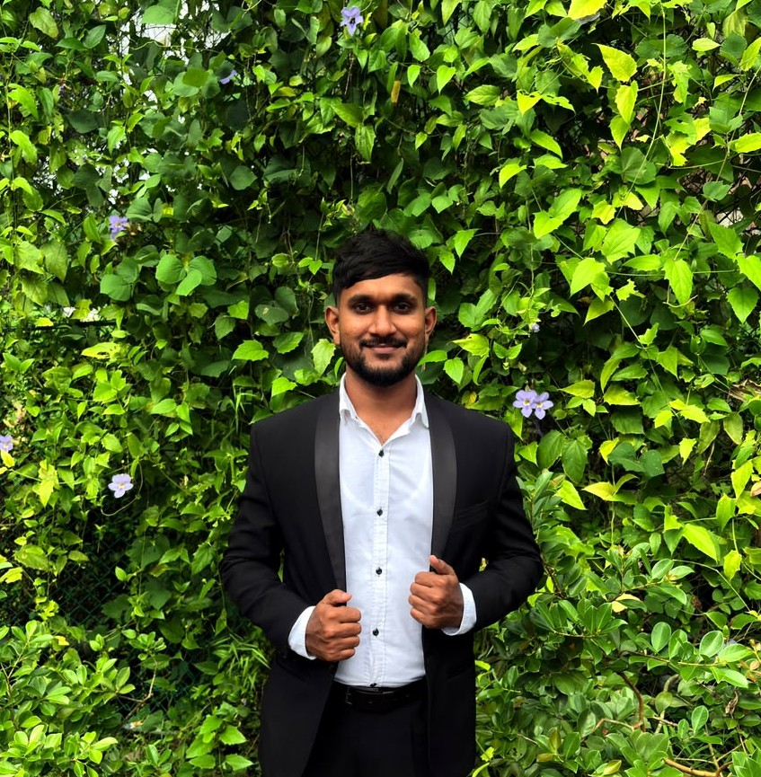

Data Science undergraduate focused on time series forecasting, machine learning, and data engineering — building models that turn messy real-world data into decisions.

I'm a Data Science undergraduate at NIBM, in collaboration with Coventry University, with a solid foundation in statistics, time series analysis, and machine learning — plus academic exposure to data engineering, financial analytics, and deep learning.
Hands-on experience with R, Python, SQL, and Power BI through forecasting, network analytics, and cloud data projects, along with exposure to deep learning frameworks such as TensorFlow, Keras, and PyTorch. Aspiring AI researcher, driven to build data-driven solutions with real-world impact.
Open to Data Science internship opportunities — reach out by email, phone, or connect on LinkedIn and GitHub.